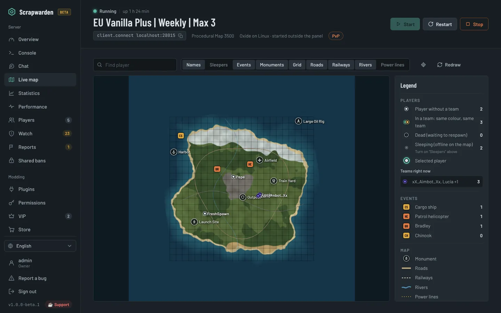
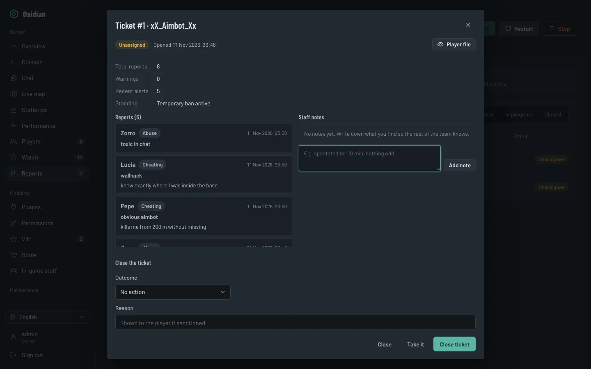
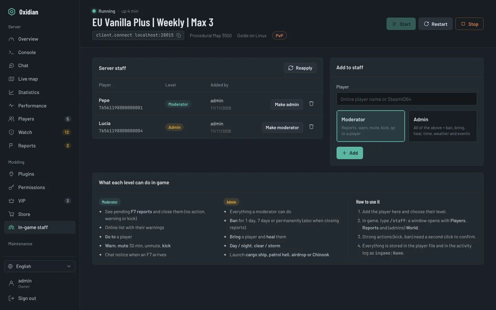
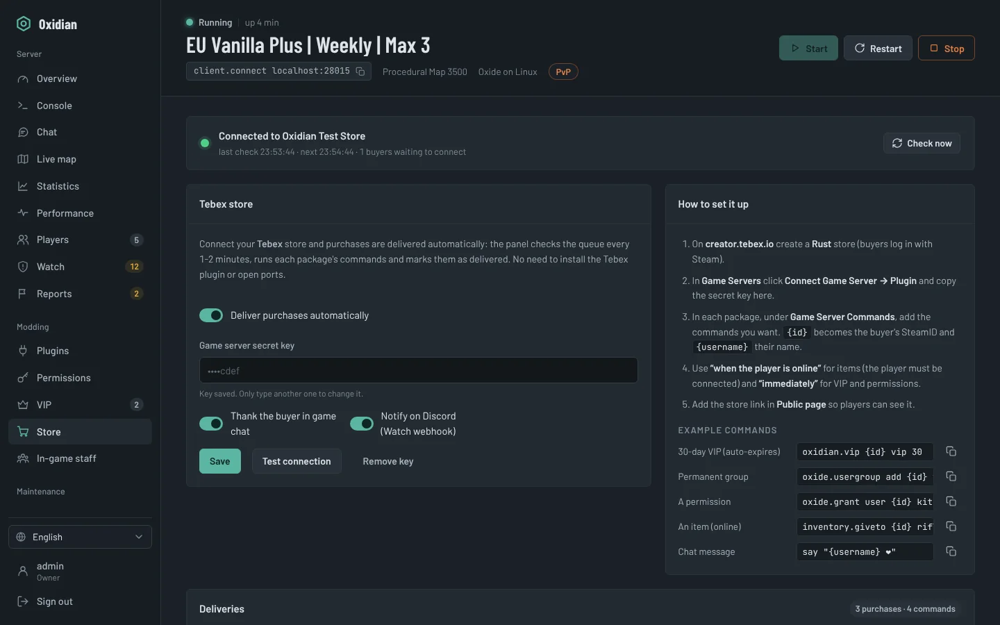
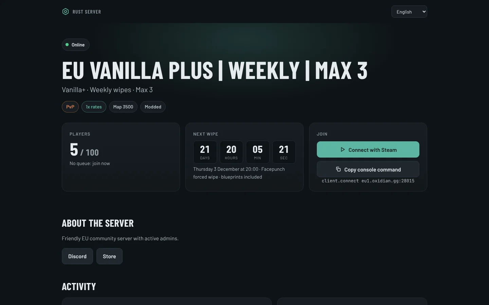

Set up
Ready in minutes, no command line.
- SteamCMD and server in one click
- Oxide or Carbon, or back to vanilla
- Progress bar with speed and ETA
- Or import yours, or connect to a rented one
Oxidian is a free, self-hosted web panel that installs, runs, moderates and grows your Rust server. Live map, F7 report tickets, in-game staff tools, a Discord bot and Tebex delivery, all in one place.

One panel instead of five tools. No more juggling:
What it does
From the first download to wipe day, with your mods and admins working from the same place.
Ready in minutes, no command line.
Keep it online and fast.
Catch problems before players leave.
/staff menuBring players in and keep them.
Take a look
Reports about the same player are grouped, so you see at a glance who five people are complaining about. Take the ticket, leave notes for your team and close it with a sanction.
/tickets in Discord for your staff
Add someone as moderator or admin in the panel and they type /staff in game. A window with players, reports and world controls opens, and every action lands in the activity log.

Paste your Tebex secret key and the panel runs each package's commands over RCON. No Tebex plugin and no open ports. Offline players get their items when they join.

Share one link with status, a Connect with Steam button, the wipe countdown, rates, activity, the map and your rules. It never shows player positions, IPs or SteamIDs.

Teams, sleepers, cargo, heli, Bradley, roads, rails, rivers and grid.
Forced wipe plus weekly or biweekly, with warnings, backup and new seed.
PvP/PvE, gather, craft, decay, time of day, weather and events.
Headshot rates, impossible distances, antihack, ban evasion, shared IPs.
Chat bridge, status, players, wipe, and staff commands. No extra installs.
Owner, admin, moderator and viewer, with 2FA and a full activity log.
Why self-hosted
Free and open source under the MIT license. No paywalled features, no ads.
Chat logs, player history and keys live on your machine, not on someone else's cloud.
Built around how Rust servers really work: wipes, F7, teams, Oxide and Carbon.
Get started
Grab the latest zip from GitHub Releases and extract it.
It installs Node.js and the dependencies and opens the firewall ports for you.
Go to http://localhost:8080, create your account and click Install server. The built-in wiki guides you from there.
Already have a server? Import its folder without reinstalling, or connect to a rented one over RCON. Both options are at the top of the Install screen.
Needs 64-bit Windows 10/11, Windows Server 2019+, Ubuntu 22.04/24.04 or Debian 12, Node.js 18+, about 12 GB of free RAM and 20 GB of disk.
Questions
Yes. Oxidian is open source under the MIT license: no subscription, no paid tier and no ads. If it helps you, you can support development on Ko-fi.
Not for the basics: installing, console, players, chat, restarts, wipes, statistics, the Discord bot and the public page work on vanilla. The live map, inventories, F7 tickets, /staff, rates and cheat detection need Oxide or Carbon; the panel installs its companion plugin automatically.
Yes. Run Oxidian on your PC or any machine and use remote mode: enter the IP, RCON port and password from your host. Console, players, chat, moderation, F7 tickets, /staff, statistics, Discord, Tebex, VIP and rates all work over RCON. Add your host's FTP or SFTP details and plugins work too, with the companion plugin uploaded for you. Installing, backups and wipes stay with your host.
No. Choose "I already have one here", point to its folder and Oxidian reads your start script to keep the same ports, identity, RCON password, map and plugins. If it is already running, the panel connects to it.
Passwords are hashed with scrypt, two-factor authentication is available and every action is logged. For remote access, put it behind HTTPS (Caddy or Nginx) or use a VPN. The RCON port never needs to be opened.
Everything works, but it's new and you may find bugs. Use the Report a bug button in the panel: it opens GitHub with the technical details already filled in. The panel tells you when a new version is out.
No. Oxidian is an independent community project. Rust is a trademark of Facepunch Studios.
Open source
Oxidian is made in spare time and will stay free. A star, a bug report or a coffee all help it keep up with every Rust update.